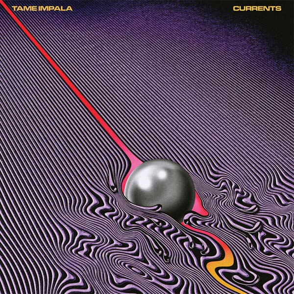

Currents - Released 2015 - 13 Songs, 51 min.
Modular Recordings
1. Let It Happen 7:48
2. Nangs 1:48
3. The Moment 4:15
4. Yes I'm Changing 4:31
5. Eventually 5:19
6. Gossip 0:56
7. The Less I Know The Better 3:36
8. Past Life 3:48
9. Disciples 1:49
10. 'Cause I'm A Man 4:02
11. Reality In Motion 4:12
12. Love/Paranoia 3:06
13. New Person, Same Old Mistakes 6:03